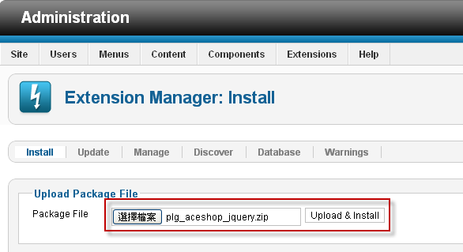
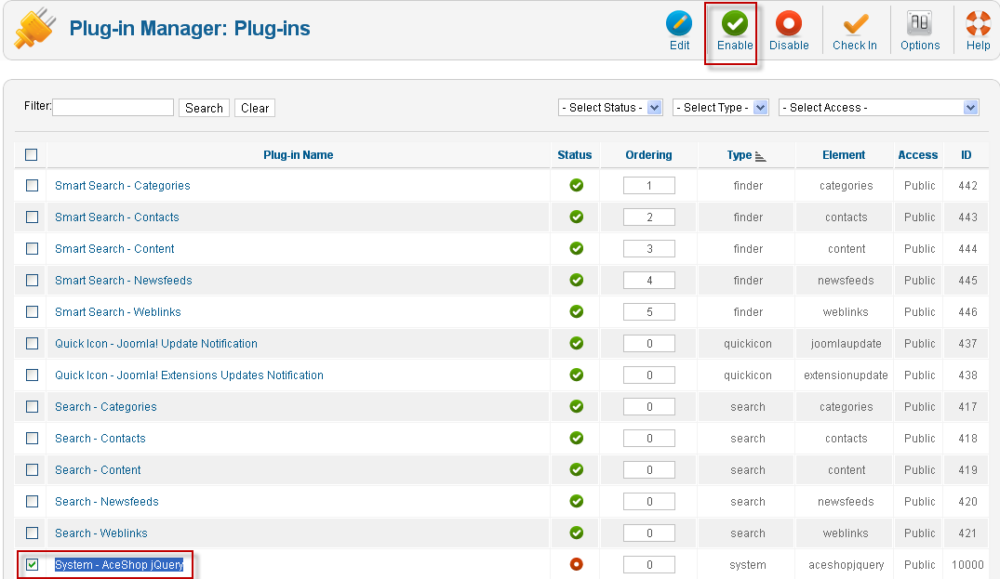
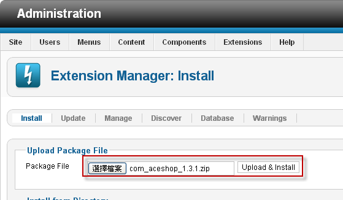
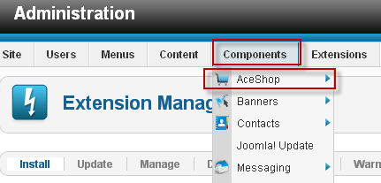
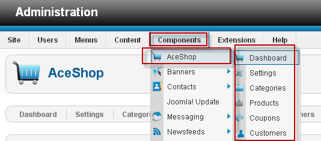
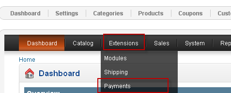
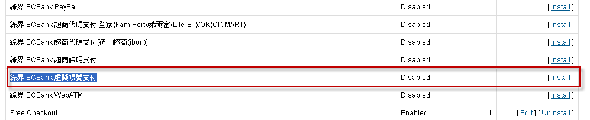
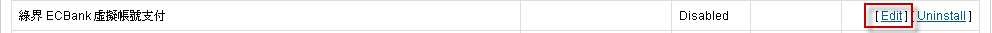
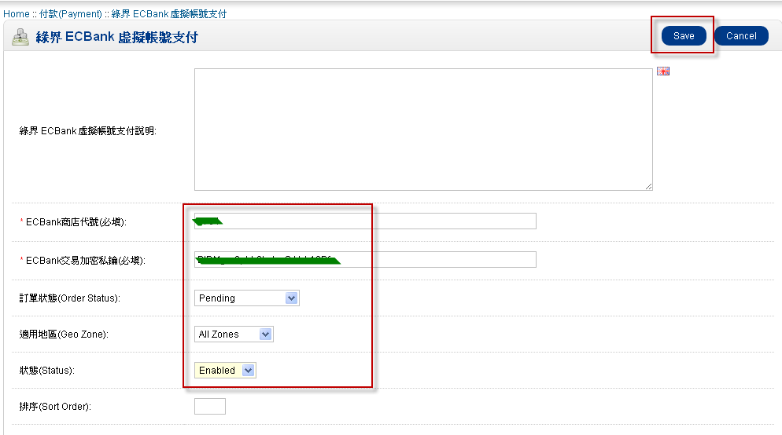

綠界科技線上金流模組安裝教學
Step 1 - 後台安裝與設定說明
此模組包含的付費模式有：
1. PayPal
2. WebATM
3. 虛擬帳號
4. 超商代碼繳費(萊爾富 & 全家 & OK 便利商店三合一代碼繳費)
5. 7-Eleven iBon超商代碼)
6. 超商條碼繳費
7. ECPAY 線上刷卡
8. 歐付寶(AllPay)線上刷卡
9. 銀聯卡(UnionPay)
10. 支付寶(Alipay)
整合綠界B2C電子發票平台, 可於金流完成後自動開立電子發票
請先安裝好Joomla v2.5.4
注意：以下每個步驟皆是必需執行的，請不要忽略某一步驟，以免無法使用，謝謝。
1 登入Joomla後台，安裝aceshop，請先安裝plg_aceshop_jquery.zip

2 依照指示至Extenshions/Plug-in Manager啟用System - AceShop jQuery功能

3 安裝aceshop主程式com_aceshop_1.3.1.zip

4 安裝完後即可在Components下看到aceshop選項

5 下載檔案並解壓縮檔案，進入AceShop資料夾，此時您可看見3個資料夾

6 將這3個資料夾利用ftp上傳至您所安裝的Joomla主機上，在components/com_aceshop/opencart中覆蓋
7 請至管理後台點選Components\aceshop\任一功能

8 接著再點選Extensions\payments功能

9 (以綠界 ECBank 虛擬帳號支付的付款模組來做說明)請點選後面的Install

10 按下Edit

11 請輸入您的商店代號、加密私鑰、訂單狀態(Pending)、狀態(Enabled)後，請按下Save
